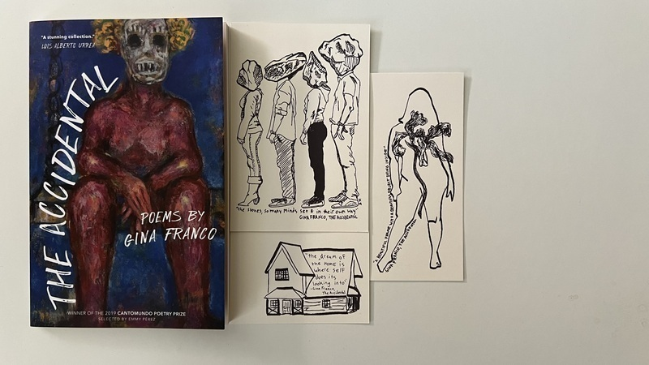

log

rehearsing for _mix_lit and remembering, over and over again, why seamstress is so great

Theatre of the Flat Imagination, volume seven: Century of Clouds†will occur at eight o'clock pm, eastern daylight time, on April 27th, 2024 and will feature performances by zbs.fm & jason calhoun. If you'd like to attend this event, please get in touch with me by email, and I'll send you the address.
†Century of Clouds is the title of a book by Bruce Boone, originally published in 1980, by Hoddypoll Press, and reissued in 2009, by Nightboat Books
seamstress is really great
📷 John Martin 📸

Theatre of the Flat Imagination, volume six: Permanent Volta†will occur at eight o'clock pm, eastern daylight time, on March 23rd, 2024 and will feature performances by Jonathan Snyder & infinite digits. If you'd like to attend this event, please get in touch with me by email, and I'll send you the address.
†Permanent Volta is the title of the 2021 book of poetry by Rosie Stockton. Published by Nightboat Books, it was the recipient of the 2019 Sawtooth Prize. Rosie Stockton’s poems have been published by Social Text Journal, VOLT, Jubilat, Apogee, Mask Magazine, Tripwire and WONDER PRESS. They hold an M.A. in Creative Writing from Eastern Michigan University and are currently a Ph.D. Student in the Gender Studies Department at UCLA. We are tremendously grateful to Rosie for their permission to borrow their book’s title for our performance.

excerpt from A/An by Mandy Gutmann-Gonzalez, available from End of the Line Press

thanks, Gina

Theatre of the Flat Imagination, volume five: Common Place will occur at eight o'clock pm, eastern standard time, on February 24th, 2024 and will feature a performance by Memory Object. If you'd like to attend this event, please get in touch with me by email, and I'll send you the address.
[ former]
[further]
[final]
[first]
williamthazard [at] pm.me